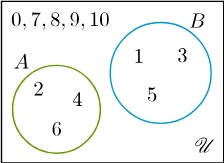

ในการเขียนเซตนั้นเราจะใช้เครื่องหมาย { } แทนเซต และใส่สมาชิกที่ต้องการไว้ข้างใน โดยใช้เครื่องหมาย
คั่นระหว่างสมาชิก เช่น { 1 , 2 , 3 } หมายถึง เซตของ 1 , 2 และ 3
การเขียนเซตจะแบ่งออกเป็นสองประเภท คือ
1. การเขียนเซตแบบแจกแจงสมาชิก
เป็นการเขียนแบบที่สามารถเห็นสมาชิกในเซตเป็นตัว ๆ ได้เลย และบอกได้ทันทีว่าอะไรอยู่ในเซตนั้นบ้าง เช่น { 2 , 4 , 6 , 8 }
2. การเขียนเซตแบบมีเงื่อนไข
การเขียนเซตแบบมีเงื่อนไข จะใช้สัญลักษณ์ { } แทนเซตเหมือนกัน แต่สิ่งที่ใส่ลงไปจะไม่ใช้สมาชิกรายตัว
แต่เป็นเงื่อนไขของการเป็นสมาชิก เช่น
{ x | x เป็นจำนวนนับที่น้อยกว่าเท่ากับ 5 }
เครื่องหมาย | จะแทนคำว่า โดยที่ หรือ คำว่า เมื่อ และ x จะเป็นตัวแปรที่แทนสิ่งที่จะอยู่ในเซตนี้
ดังนั้นเซตนี้ อ่านว่า เซตของ x โดยที่ x เป็นจำนวนนับที่น้อยกว่าเท่ากับ 5 ซึ่งจะได้ว่าสมาชิกในเซตนี้คือ 1 , 2 , 3 , 4 และ 5
ในการหาจำนวนสมาชิกในแต่ละเซตก็คือ การหาว่าในเซตนั้นมีสิ่งที่อยู่ข้างในกี่ตัวเท่านั้นเอง
เช่น จำนวนสมาชิก ของ { 2 , 4 , 6 , 8 } คือ 4
จำนวนสมาชิกของเซต A ใช้สัญลักษณ์ n(A)
มีการแบ่งเซตตามจำนวนสมาชิกออกเป็น 2 ประเภท
1. เซตจำกัด คือ เซตที่สามารถนับจำนวนสมาชิกได้ ไม่ว่าจะนับออกมาเป็นจำนวนอะไรก็ตาม รวมถึง เซตที่มีจำนวนสมาชิกเป็น 0 ก็ถือว่าเป็นเซตจำกัดเหมือนกัน
เซตที่มีจำนวนสมาชิกเป็น 0 เรียกว่า เซตว่าง สัญลักษณ์คือ ∅
2. เซตอนันต์ คือ เซตที่มีสมาชิกเยอะมากจนนับไม่ได้ หรือ บอกไม่ได้ว่าสมาชิกเป็นเท่าไหร่กันแน่ เช่น { 1 , 2 , 3 , 4 , 5 , ⋯ }
เราจะไม่สามารถบอกได้ว่าสมาชิกมีเท่าไหร่กันแน่ ดังนั้น ถ้าเขียนเซตแบบแจกแจงสมากชิกแล้วมี ⋯ อยู่ที่หัวหรือท้ายเซต จะเป็นเซตอนันต์
เซตที่จะเท่ากัน คือ เซตที่เหมือนกันทุกอย่าง นั้นคือ มีจำนวนสมาชิกเท่ากัน และ สมาชิกทุกตัวเหมือนกัน
เช่น { 1 , 2 , 3 , 4 , 5 } เท่ากับ { 2 , 1 , 1 , 3 , 5 , 4 }
ยูนิเวอร์ส ก็คือ ขอบเขตในการกล่าวถึงกลุ่มต่าง ๆ หรือ เซตต่าง ๆ โดยสมาชิกในเซตต่าง ๆ ที่กล่าวถึงนั้นจะต้องอยู่ภายใต้ยูนิเวอส์นั้น ๆ
ถ้าแปลตรงตัวก็คือ เซตย่อย ที่ย่อยออกมากจากอีกเซต เช่น ถ้าบอกว่า A เป็นสับเซตของ B นั้นหมายความว่า เซต B จะต้องใหญ่กว่าหรือเท่ากับเซต A
และเนื่องจากเซต A ย่อยออกมาจากเซต B สมาชิกทุกตัวใน A จะต้องอยู่ในเซต B ด้วย
สับเซต ใช้สัญลักษณ์ ⊂
เซต A เป็นสับเซตของเซต B ใช้สัญลักษณ์ A ⊂ B และสมาชิกทุกตัวในเซต A อยู่ในเซต B
ไม่เป็นสับเซต ใช้สัญลักษณ์ ⊄
เซต A ไม่เป็นสับเซตของเซต C ใช้สัญลักษณ์ A ⊄ C ซึ่งจะต้องมีสมาชิกตัวใดตัวหนึ่งใน A ที่ไม่เป็นสมาชิกของ C
ถ้า A เป็นเซต เพาเวอร์เซตของเซต A คือเซตที่มีสมาชิกประกอบไปด้วยสับเซตของ A ทั้งหมด เขียนแทนด้วย
P ( A ) = { สับเซตทั้งหมดของ A }
เช่น ถ้า A = { 1 , 2 } สับเซตของ A คือ ∅ , { 1 } , { 2 } , { 1 , 2 } หรือ A ดังนั้น
P ( A ) = { ∅ , { 1 } , { 2 } , A }
กำหนดให้ A และ B เป็นเซตใด ๆ
1. ∅ ∈ P ( A ) เพราะ ∅ ⊂ A เสมอ
2. ∅ ⊂ P ( A ) เพราะเซตว่างเป็นสับเซตของทุกเซต แล้ว P ( A ) ก็เป็นเซตเช่นกัน
3. A ∈ P ( A ) เพราะ A ⊂ A เสมอ
4. ถ้า A เป็นเซตจำกัด และ n ( A ) คือจำนวนสมาชิกของ A แล้ว P ( A ) จะมีสมาชิก 2 n(A) ตัว ( เท่ากับจำนวนสับเซตของ A )
5. A ⊂ B ก็ต่อเมื่อ P ( A ) ⊂ P ( B )
6. P ( A ) ∩ P ( B ) = P ( A ∩ B )
7. P ( A ) ∪ P ( B ) ⊂ P ( A ∪ B )
การยูเนียนระหว่างเซตสองเซต คือ การเอาเซตทั้งสองเซตมารวมกันเป็นเซตเดียว นั้นคือ การเอาสมาชิกมารวมกัน สัญลักษณ์ที่ใช้แทนคำว่ายูเนียน คือ ∪
อินเตอร์เซกชัน หรือ การอินเตอร์เซกกันของเซตสองเซต คือ การหาสมาชิกส่วนที่ซ้ำกันจากสองเซตมาเขียนเป็นอีกเซตหนึ่ง สัญลักษณ์ที่ใช้แทนคำว่าอินเตอร์เซก คือ ∩
การหาผลต่างระหว่างเซตหรือจับเซตสองเซตมาลบกัน ให้คิดว่าเอาเซตข้างหน้าเป็นตัวตั้ง จากนั้นถ้าหากมีสมาชิกตัวไหนซ้ำกับในเซตด้านหลังให้ตัดออก สัญลักษณ์แทนการลบ คือ เครื่องหมายลบ − ที่เราใช้กันในการลบเลขทั่วไป
การหาคอมพลีเมนต์ คือ การหาสมาชิกทั้งหมดที่ไม่อยู่ในเซตนั้น ( แต่อยู่ในยูนิเวอร์ส )
สัญลักษณ์ของคอมพลีเมนต์ มี 2 รูปแบบ คือ การเขียนชื่อเซตนั้น ๆ ตามด้วยเครื่องหมายไพรม์ ( ′ )
หรืออาจจะเขียนชื่อเซตนั้น ๆ แล้วเขียนยกกำลังด้วยตัว c เช่น คอมพลีเมนต์ของเซต A เขียนแทนด้วย A′ หรือ Ac ก็ได้
คือแผนภาพที่ใช้เขียนแทนเซตโดยใช้รูปปิดอะไรก็ได้ เช่น รูปสามเหลี่ยม รูปวงกลม รูปวงรี แต่จะนิยมเขียนแทนเอกภพสัมพัทธ์ด้วยรูปสี่เหลี่ยมผืนผ้า แล้วเขียนแทนเซตในเอกภพสัมพัทธ์ด้วยรูปวงกลม
ตัวอย่างการเขียนแผนภาพเวนน์-ออยเลอร์
กำหนด U = { 0 , 1 , 2 , 3 , ⋯ , 10 } , A = { 2 , 4 , 6 } และ B = { 1 , 3 , 5 }
เขียนเป็นแผนภาพเวนน์ - ออยเลอร์ได้ดังนี้

เซต A และ B ไม่มีสมาชิกที่เหมือนกันเลย แสดงว่าทั้ง 2 วง แยกออกจากกันชัดเจน
เราใส่ตัวเลขที่เป็นสมาชิกของ A และ B ลงในวงกลมทั้ง 2 เซต
ตัวเลขที่เหลือในเอกภพสัมพัทธ์ที่ไม่ได้อยู่ทั้งในเซต A และ B เราต้องเขียนแสดงไว้ในกรอบสี่เหลี่ยมผืนผ้านอกวงกลม